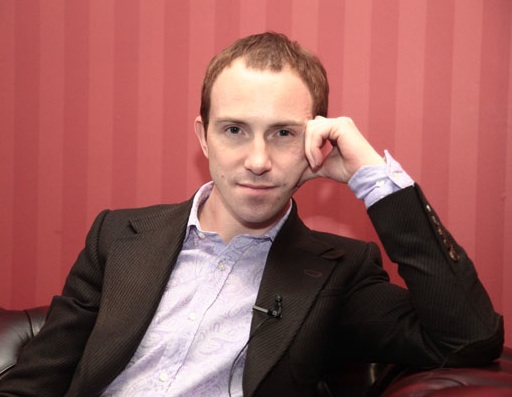

Егор Булыгин (Москва, 1977 г.р.) M.A. NLP, сертифицированный коуч, сертифицированный тренер НЛП (Международный Эриксоновский Университет, Канада), специалист по Эриксоновскому гипнозу (М.Р. Гинзбург), практик Чжунь Юань Цигун (Сюй Минтан). Являюсь автором многих тренингов, вебинаров, онлайн курсов и статей, представленных на сайте NLPING.ru. А также автором книги "НЛП как оно есть. Практика успеха." Обучался НЛП у Джона Гриндера, Фрэнка Пьюселика, Мерилин Аткинсон и многих других известных тренеров. Спиральной Динамике обучался у Дона Бека и Криса Кована. Для себя практикую медитацию с 1992 года, в 1998 году освоил продвинутый курс ТМ-Сиддхи, в 2003 прошел курс Чжун Юань Цигун у мастера Сюй Минтана. Высшие уровни лидерства Мастер-класс "Деньги - выход на новый уровень" Курс "НЛП-Мастер" (Центр НЛП в образовании): Андрей Плигин, Александр Герасимов, Курс "НЛП-Практик": Татьяна Мужицкая, Андрей Кёниг, Вячеслав Захаров, Сергей Веревкин, Андрей Плигин, Александр Герасимов. Курс "Эриксоновский гипноз": Михаил Гинзбург. Курс "НЛП-Тренер" (Московский Центр НЛП): Фрэнк Пьюселик, Андрей Кёниг, Татьяна Мужицкая, Андрей Виноградов, Елена Крянева, Константин Коваленок, Нина Голосова, Михаил Пелехатый, Сергей Горин. Курс "НЛП-Тренер" (Международный Эриксоновский Университет): Мерилин Аткинсон. Курс "Наука и искусство трансформационного коучинга" (Международный Эриксоновский Университет): Мерилин Аткинсон, Анна Лебедева, Максим Ошурков. Новый Код НЛП: Джон Гриндер, Кармен Бостик. Спиральная Динамика: Дон Бек Глубинный коучинг: Мерилин Аткинсон Командный коучинг: Анна Лебедева Эннеаграммы: Мерилин Аткинсон Эриксоновский гипноз: Сергей Горин. Терапевтические метафоры (НЛП): Фрэнк Пьюселик. Мета-модель (НЛП): Фрэнк Пьюселик. Духовный рост в бизнесе: Марк Пальчик Продажи со сцены: Андрей Парабеллум, Петр Осипов Инфомаркетинг: Фрэнк Керн Цигун (4 ступени): Сюй Минтан. ТМ-Сиддхи: Махариши Махеш Йоги.
Занимаюсь НЛП с 2000 года, веду тренинги и персональный коучинг с 2003 года.
Проводил тренинги в следующих городах: Москва, Санкт-Петербург, София, Киев, Минск, Новосибирск, Тольятти, Самара, Казань, Витебск. Отзывы.Тренерская специализация
Отзывы участников тренингов Егора Булыгина
Сертификационное образование: НЛП и гипноз (2000 - 2003)
Курс "НЛП-Мастер" (Московский Центр НЛП): Татьяна Мужицкая, Андрей Кёниг, Вячеслав Захаров.Сертификационное образование: коуч и тренер (2003 - 2010)
Профильные тренинги и семинары (2004 - 2012)
Спиральная Динамика: Крис Кован, Наталья ТодоровичДуховные практики (1992 - 2003)
Контакты: Написать письмо